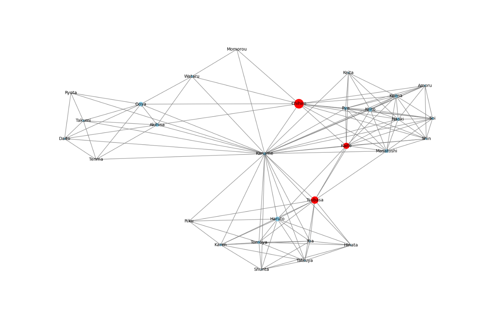

このプロジェクトは、私が村田研究室に所属していた際に大学の授業課題として実施したものです。2024年10月に、ソーシャルネットワークに関する研究プロジェクトとして取り組みました。
プロジェクト名
Research Project: Social network
実施時期
2024年10月
担当
北村 要
目的・概要
本プロジェクトの目的は、ソーシャルネットワークの構造や特性を分析し、ネットワーク理論の基礎を理解することです。特に、ノード間のつながりやネットワークの拡がり方、クラスタリング、中心性指標などの観点から、実データやシミュレーションを用いて考察を行いました。また、実際に自分のインスタグラムアカウントのフォロー・フォロワー関係をデータとして取得し、ネットワークグラフとして可視化・分析を行いました。
使用技術・ツール
Python（主にNetworkXライブラリ）を用いてネットワークの可視化や解析を行いました。また、データの前処理や統計的な分析にはpandasやmatplotlibも活用しました。インスタグラムのフォロー・フォロワー関係のデータ取得には、外部ツールやAPIを利用しました。
成果・考察
実際のソーシャルネットワークデータを解析することで、現実世界のネットワークがスモールワールド性やスケールフリー性といった特徴を持つことを確認しました。特に、自分のインスタグラムアカウントのネットワークを可視化した際、特定のグループや中心的なノードが存在することが明確になり、SNSにおける人間関係の構造的特徴を実感できました。また、中心性指標を用いることで、ネットワーク内で重要な役割を果たすノードを特定できることを学びました。
制作過程
まず、ネットワーク理論の基礎を文献で学習し、次にPythonを用いて小規模なネットワークの生成・可視化を行いました。その後、実データとして自分のインスタグラムアカウントのフォロー・フォロワー関係を取得し、NetworkXでグラフ化・解析を実施しました。各種指標の計算・比較を通じて、ネットワークの性質について理解を深めました。